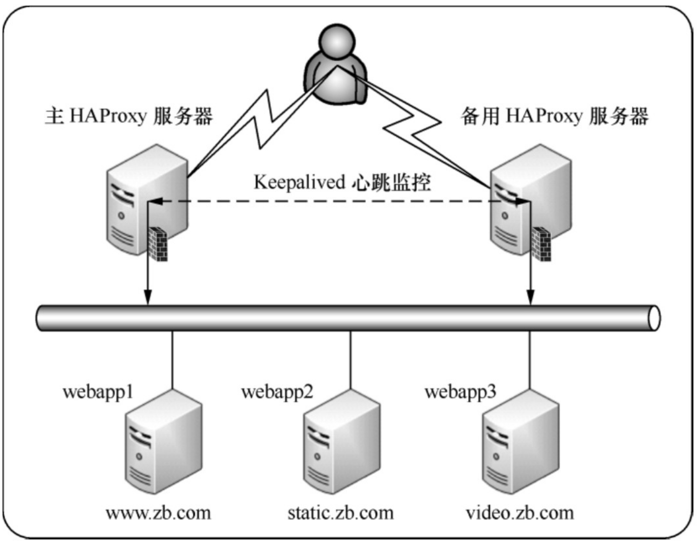
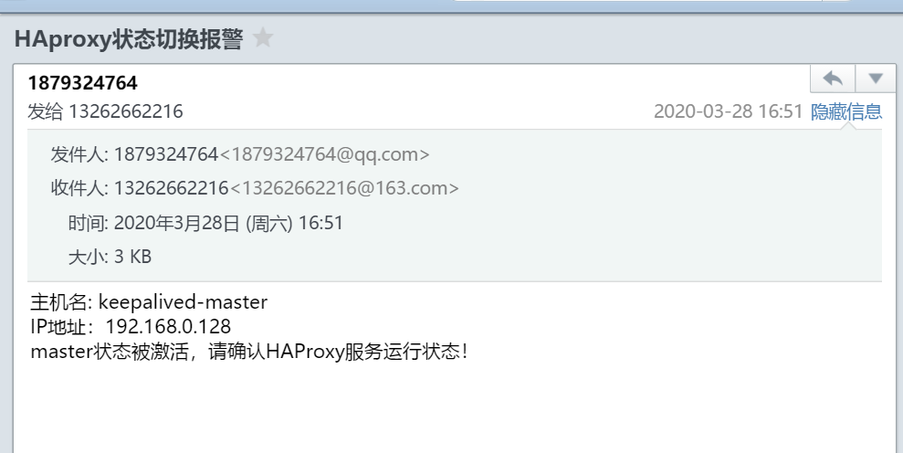

10.10. 搭建HAProxy+Keepalived高可用负载均衡系统¶
Haproxy+Keepalived地址规划表
主机名 |
主机IP地址 |
集群角色 |
虚拟 VIP |
|
|---|---|---|---|---|
master-haproxy |
192.168.0.128 |
主HAProxy服务 |
192.168.0.130 |
|
backup-haproxy |
192.168.0.129 |
备用HAProxy服务器 |
192.168.0.130 |
|
webapp1 |
192.168.0.20 |
后端服务器1 |
无 |
|
webapp2 |
192.168.0.21 |
后端服务器2 |
无 |
|
webapp3 |
192.168.0.22 |
后端服务器3 |
无 |
此结构要实现的功能是：通过 HAproxy
实现三个站点的负载均衡，即当用户通过域名www.zb.com访问网站时，HAproxy要将请求发送到webapp1主机。同理，当用户通过域名static.zb.com
访问网站时，HAproxy 要将请求发送到 webapp2
主机。当用户通过域名video.zb.com访问网站时，HAproxy要将请求发送到webapp3主机。同时，当主HAProxy服务器发生故障后，能立刻将负载均衡服务切换到备用HAProxy服务器上。
为了实现HAproxy的高可用功能，这里采用Keepalived作为高可用监控软件。下面依次介绍高可用HAproxy的搭建过程。
高可用HAproxy集群系统拓扑结构 
10.10.1. 1.haproxy的配置¶
global
log 127.0.0.1 local0 info
maxconn 4096
user nobody
group nobody
daemon
nbproc 1
pidfile /usr/local/haproxy/logs/haproxy.pid
defaults
mode http
retries 3
timeout connect 5s
timeout client 30s
timeout server 30s
timeout check 2s
listen admin_stats
bind 0.0.0.0:19088
mode http
log 127.0.0.1 local0 err
stats refresh 30s
stats uri /haproxy-status
stats realm welcome login\ Haproxy
stats auth admin:xxxxxx
stats hide-version
stats admin if TRUE
frontend www
bind 192.168.66.10:80
mode http
option httplog
option forwardfor
log global
acl host_www hdr_dom(host) -i www.zb.com
acl host_static hdr_dom(host) -i static.zb.com
acl host_video hdr_dom(host) -i video.zb.com
use_backend server_www if host_www
use_backend server_static if host_static
use_backend server_video if host_video
backend server_www
mode http
option redispatch
option abortonclose
balance roundrobin
option httpchk GET /index.jsp
server webapp1 192.168.0.20:80 weight 6 check inter 2000 rise 2 fall 3
backend server_static
mode http
option redispatch
option abortonclose
balance roundrobin
option httpchk GET /index.html
server webapp2 192.168.0.21:80 weight 6 check inter 2000 rise 2 fall 3
backend server_video
mode http
option redispatch
option abortonclose
balance roundrobin
option httpchk GET /index.html
server webapp3 192.168.0.22:80 weight 6 check inter 2000 rise 2 fall
在这个 HAProxy 配置中，通过 ACL 规则将三个站点分别转向 webapp1、webapp2 和webapp3 三个服务节点上， 这样变相地实现了负载均衡。 三个后端实例 server_www、server_static和server_video虽然只有一台服务器，但是如果站点访问量增加， 可以很容易地增加后端服务器，实现真正的负载均衡。
10.10.2. 2.配置主、备用Keepalived服务器¶
主机 /etc/keepalived/keepalived.conf
! Configuration File for keepalived
global_defs {
notification_email {
root@localhost
}
notification_email_from keepalived@localhost
smtp_server 127.0.0.1
smtp_connect_timeout 30
script_user root
enable_script_security
route_id haproxy_keep
}
vrrp_script chk_haproxy {
script "/usr/bin/killall -0 haproxy"
interval 5
weight 21
}
vrrp_instance HAProxy_HA {
state BACKUP
interface ens32
virtual_router_id 151
priority 100
nopreempt
advert_int 2
authentication {
auth_type PASS
auth_pass 1111
}
notify_master "/etc/keepalived/mail_notify.py master "
notify_backup "/etc/keepalived/mail_notify.py backup"
notify_fault "/etc/keepalived/mail_notify.py falut"
track_script {
chk_haproxy
}
virtual_ipaddress {
192.168.0.130/24
}
}
/etc/keepalived/mail_notify.py文件是一个邮件通知程序， 当KeepAlived进行master、backup、fault状态切换时，将会发送通知邮件给运维人员， 这样可以及时了解高可用集群的运行状态，以便在适当的时候人为介入故障处理。
mail_notify.py
#!/usr/bin/env python
# -*- coding:utf8 -*-
# auther; 18793
# Date：2020/3/28 15:22
# filename: mail_notify.py
import sys
reload(sys)
from email import encoders
from email.header import Header
from email.mime.text import MIMEText
from email.utils import parseaddr, formataddr
import smtplib
sys.setdefaultencoding('utf-8')
import socket
def _format_addr(s):
name, addr = parseaddr(s)
return formataddr((Header(name, 'utf-8').encode(), addr))
def send_mail(to_list, sub, content):
mail_host = "smtp.qq.com" # 设置验证服务器，这里以163.com为例
mail_user = "1879324764" # 设置验证用户名
mail_pass = "rpesbfgwmqcycceh" # 设置验证密码
mail_postfix = "qq.com" # 设置邮箱的后缀
me = mail_user + "<" + mail_user + "@" + mail_postfix + ">"
msg = MIMEText(content, 'plain', 'utf-8')
msg['Subject'] = Header(sub, 'utf-8').encode()
msg['From'] = _format_addr(me)
msg['To'] = _format_addr(to_list)
try:
s = smtplib.SMTP(mail_host, 25)
#s.set_debuglevel(1)
s.login(mail_user, mail_pass)
s.sendmail(me, to_list, msg.as_string())
s.quit()
return True
except Exception as e:
print(str(e))
return False
finally:
s.close()
def get_local_hostname_ip():
hostname = socket.gethostname()
ip = socket.gethostbyname(hostname)
return hostname, ip
if sys.argv[1] != "master" and sys.argv[1] != "backup" and sys.argv[1] != "fault":
sys.exit()
else:
notify_type = sys.argv[1]
if __name__ == '__main__':
info = get_local_hostname_ip()
strcontent = "主机名: " + str(info[0]) + "\n" + "IP地址：" + info[1] + "\n" + notify_type + "状态被激活，请确认HAProxy服务运行状态！"
# 下面这段是设置接收报警信息的邮件地址列表，可设置多个
#send_mail('13262662216@163.com', "HAproxy状态切换报警", strcontent.encode('utf-8'))
mailto_list = ['13262662216@163.com', 'hujianli94@126.com']
for mailto in mailto_list:
send_mail(mailto, "HAproxy状态切换报警", strcontent.encode('utf-8'))
最后，将keepalived.conf文件和mail_notify.py文件复制到备用HAProxy服务器上对应的位置，
并且将keepalived.conf文件中的priority值修改为90，由于配置的是不抢占模式，
因此，还需要在备用HAProxy服务器上去掉nopreempt选项。
10.10.3. 3. 验证¶
在备机上，执行
[root@keepalived-backup keepalived]# systemctl stop haproxy
日志里面显示如下：
Mar 28 16:50:57 keepalived-backup Keepalived_vrrp[8266]: /usr/bin/killall -0 haproxy exited with status 1
Mar 28 16:50:57 keepalived-backup Keepalived_vrrp[8266]: VRRP_Script(chk_haproxy) failed
Mar 28 16:50:59 keepalived-backup Keepalived_vrrp[8266]: VRRP_Instance(HAProxy_HA) Entering FAULT STATE
Mar 28 16:50:59 keepalived-backup Keepalived_vrrp[8266]: VRRP_Instance(HAProxy_HA) removing protocol VIPs.
Mar 28 16:50:59 keepalived-backup Keepalived_vrrp[8266]: VRRP_Instance(HAProxy_HA) Now in FAULT state
Mar 28 16:51:02 keepalived-backup Keepalived_vrrp[8266]: /usr/bin/killall -0 haproxy exited with status 1
Mar 28 16:51:07 keepalived-backup Keepalived_vrrp[8266]: /usr/bin/killall -0 haproxy exited with status 1
Mar 28 16:51:12 keepalived-backup Keepalived_vrrp[8266]: /usr/bin/killall -0 haproxy exited with status 1
这段日志显示了chk_haproxy检测失败后，HAProxy服务器自动进入了BACKUP状态，同时释放了虚拟IP。由于执行了角色切换，因此mail_notify.py脚本应该会自动执行并发送状态切换邮件
此时新切换成的主机会会触发邮件脚本，如下： 
备机haproxy服务恢复正常
[root@keepalived-backup keepalived]# systemctl start haproxy
日志显示如下：
Mar 28 16:55:57 keepalived-backup systemd: Started HAProxy Load Balancer.
Mar 28 16:56:02 keepalived-backup Keepalived_vrrp[8266]: VRRP_Script(chk_haproxy) succeeded
Mar 28 16:56:04 keepalived-backup Keepalived_vrrp[8266]: VRRP_Instance(HAProxy_HA) Entering BACKUP STATE